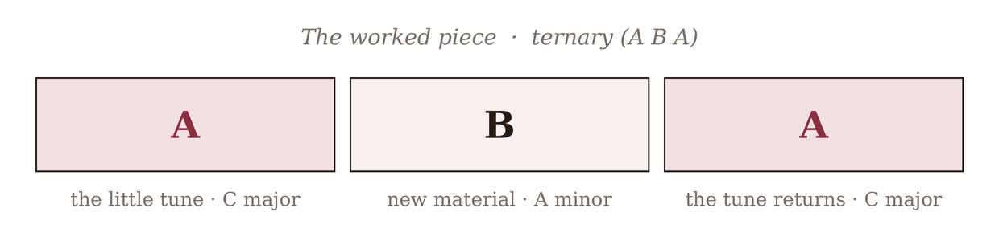
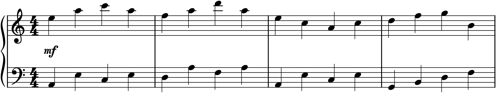

Project 3 gave you a complete little piece — a melody with an accompaniment. But a single tune, however finished, is not yet a piece in the fullest sense; it is one section. This project builds the next level up: a complete short piece with a real form — a beginning, a contrasting middle, and a return — using the shapes of Part 4. It is the first time you will compose across a span longer than a single melody, and it turns your tune from a fragment into a whole, with the satisfying architecture of departure and homecoming that gives real music its shape.
The brief
Compose a complete short piece in binary or ternary form. It should have a clear opening section in the tonic, a contrasting middle section (with a change of key and character), and a return, marked with tempo and dynamics and finished from start to end. Build it, if you like, from the melody you wrote in Project 3 — this is exactly how that tune grows into a piece.
P4.1Choose your form
The two smallest complete forms are your options (Chapter 23), and for a first piece ternary form (A B A) is the easier and more satisfying door, because you already have most of it: your Project 3 piece is a ready-made A, complete and closed in the tonic, and you need only compose a contrasting B and bring A back. (Binary form is also available and equally valid — its two interdependent halves, moving to the dominant and back, make a slightly subtler shape; try it once you have done a ternary.) Here is the plan for a ternary piece, built on our running tune:

The shape in Figure P4.1 is your target. You have A already; the work of this project is the middle and the return.
P4.2Your A section
Take your Project 3 piece and treat it as the A section. For a ternary form it should be closed — beginning and ending in the tonic, able to stand on its own (Chapter 23) — which a complete little melody-with-accompaniment already is. If yours ends on a half cadence or trails off, tidy it into a firm authentic cadence in the tonic, so that it is a whole, self-contained statement. This is the “home” your piece will depart from and return to.
P4.3Compose the contrasting middle
Now the new material: a B section that contrasts with A, so that A’s return feels like a genuine homecoming. Contrast it in two ways (Chapter 23). Change the key — the relative minor is an excellent choice for a major-key A, giving an immediate darkening; the dominant or subdominant also work (use the modulation of Chapter 22 to get there). And change the character — a different melodic shape, rhythm, register, or texture, so the ear registers B as a real departure. Here is a contrasting middle written for the running tune:

Notice the end of Figure P4.2: it does not simply stop in A minor but turns, in its last bar, onto the dominant of C — the G7 that pulls back home. This little retransition is what makes the return of A land so well; a B section that prepares its own dissolution into the returning A is the mark of a well-joined ternary form.
P4.4Bring back the A
The return is the easiest and most rewarding part: bring the A section back, in the tonic, to close the piece. In its simplest form the return is literal — A again, exactly — and you need not even write it out twice (Chapter 23’s box): end B with a D.C. al Fine, sending the player back to the start and through A a second time to a Fine marked at A’s end. If you want more polish, vary the returning A slightly (a richer accompaniment, an added ornament, per Chapter 24), so the homecoming is familiar but not merely repetitive. Either way, the whole arc — statement, contrast, return — is now complete.
P4.5Connect, refine, and finish
A piece is more than its sections stacked; it is the joins between them that make it flow. Make sure B grows out of A and leads back to it — the retransition of §P4.3 does the second half of that job. Check the whole thing for pacing: play it start to finish and listen for anything that drags or lurches. Then finish it properly (Chapter 10): confirm the tempo and dynamics across all three sections, and consider a small coda — a few bars after the final A to round the piece off — or a ritardando at the very end. Save it under a clear name; it is a real, complete composition, and the longest you have written.
Listen for the homecoming
The whole point of a ternary form is the moment A comes back, and the test of your piece is whether that moment lands — whether the return of the opening, after the contrasting middle, feels like a genuine arrival home. Play the join from the end of B into the returning A over and over, and adjust until it feels inevitable. If the return is satisfying, the form works; if it feels flat, the B section probably did not contrast enough, or did not prepare its return. Trust that feeling of homecoming — it is what the form exists to produce.
P4.6Going further
Compose a piece in binary form as well, to feel the difference — its two halves, moving out to the dominant and working back, make a subtler arc than ternary’s clear return. And hold onto this piece: in Part 5 you will take music like this and arrange it for an ensemble, and the fuller sense of form you have built here will carry all the way to the Capstone.
Done when…
- The piece has a clear form — ternary (A B A) or binary — with a complete opening section in the tonic.
- The middle genuinely contrasts, in key (a modulation) and in character, and it prepares its return.
- The opening material returns to close the piece in the tonic, so the whole has a real beginning, middle, and homecoming.
- Tempo, dynamics, and phrasing are marked throughout, and the sections are joined to flow, not merely stacked.
- The piece is complete and saved — the most substantial thing you have composed so far.